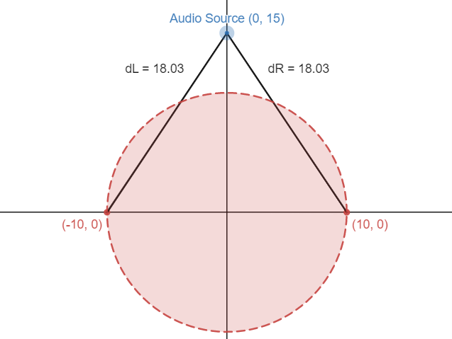
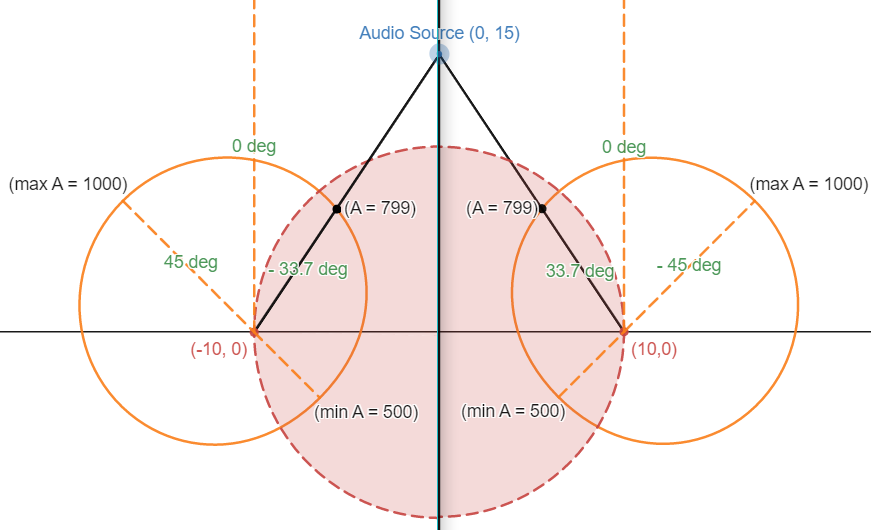
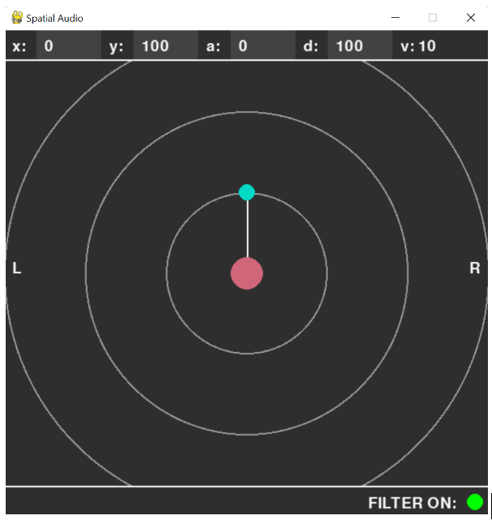
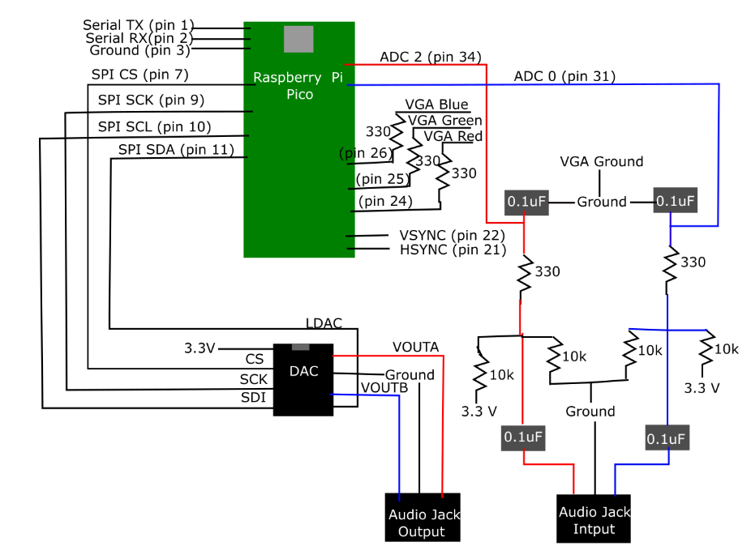

This webpage is the final report for our final project in ECE 4760 Microcontrollers Fall 2022.
Project Introduction
Our project is a real time audio spatializer that allows the user to adjust their aural experience by changing the perceived location and distance of the source of the audio they are playing.
In recent years, spatial audio has had a grip on video viewing platforms such as TikTok and YouTube, where viral videos will tell users to “put on headphones for the full experience” and take them through an audio experience that makes them feel immersed in some sort of audioscape — such as being in the middle of a conversation, getting a haircut at a barbershop (The Virtual Barbershop), or scarily realistic simulations showing off 3D audio technology (The Tucker Zone). We were fascinated by how convincing these effects were, and wanted to learn more about how they were implemented.
Further inspired by the concept of 8D audio, we wanted to explore ways to transform normal audio we listen to with our headphones and give it the same spatial effect. 8D audio is a type of audio effect typically used for music where, when wearing headphones, sounds seem to be coming from different locations in the room. Usually, this effect is implemented on specific songs and heavily edited to cater to that specific song and make the user think that different parts of the song are coming from different parts of the audioscape. We implemented an alternative to this, where instead of different parts of the song coming from different locations, the user could adjust the perceived location of the song as a whole by dragging around a virtual, on-screen audio source. By simply putting on a pair of headphones, the user is immersed into an aural landscape that is under their complete control, and can be applied to any song or audio they would like to hear. The user is able to interface with a GUI to adjust the distance, angle, volume, and filtering of the audio they are inputting into the system in real time.
Background Information and Research
Our original project idea was to have a mostly stationary audio source, and to have a device that tracks the user’s head so that when they move their head, the audio sounds like it is still coming from the same location. However, because of hardware and time constraints, we used a GUI to mimic the position of the audio source relative to the head. We also realized that it would be very difficult to track head angle with the gyroscope and accelerometer as we originally planned. This is because the gyroscope is prone to error accumulation over time, and unlike in lab 3, we would be unable to get good accelerometer readings to do complementary angle calculation because our primary head movements would be side-to-side, which are very difficult to get readings from the accelerometer for. Thus, we switched to using only the GUI to change the location of the audio, which worked a lot better than getting gyroscope readings and was also faster since we no longer needed to calculate a complementary angle and head location based off of the sensor measurements. This improved processing speed and made our goal of real-time processing much more feasible. Additionally, having a GUI greatly improved the user’s ability to interface with the program, as we were able to adjust a lot more parameters such as precise distance, angle, location, volume, and whether the spatial filtering was on or off. It also made our design more modular as we now had another separate component interfacing with our C program, and we were able to build, test, and debug these two programs separately. This helped in our design process and made it easier for different group members to work on different parts of the project at the same time.
We spent a lot of time in the beginning reading papers and doing research about industry practices for making sound appear to be coming from specific directions and distances. We found that most industry practices use Head-Related Transfer Functions (HRTFs), which define a frequency related transformation on the audio that is dependent on the angle of the source to each ear in 3D space. This is because audio signals are transformed by the external human ear structure, and this transformation differs depending on the angle of the source to the ear, as well as each person’s individual ear shape and structure. These HRTFs are usually calculated experimentally by placing small microphones in the ears of a human or a mannequin and recording the baseline impulse response of each ear after sampling an input from many different locations in 3D space. These samples are used to create a database of HRTFs which then can be applied to spatialize audio. We briefly entertained the possibility of obtaining HRTFs and using them for our transformation, but quickly realized that the large size of each HRTF combined with the large number of HRTFs we would need to cover a wide range of spatial locations would be impossible given the memory and processing constraints of our hardware. Thus, we decided to focus on azimuth (side to side, disregarding elevation changes) movement of audio sources, and implemented other methods to achieve the spatial audio effect: amplitude difference, delay (phase difference), and low pass filtering.
High Level and Algorithmic Design
The goal of our program is to read audio input data, process it according to information about the location of the virtual audio source, then output the processed audio data in real time. We designed the program flow and mathematical algorithms, as well as applied optimizations to our program to meet the time constraints of real-time processing.
Logical Structure
For our main program logic, we read an audio sample from the ADC into an input buffer and output a processed audio sample stored in an output buffer every 80 microseconds (12.5 kHz sampling frequency). Concurrently to our input/output streaming, we also process the input audio signal to transform it into a spatialized output audio signal. This guarantees that we are consistently reading the input audio without skipping or lagging, and that we are outputting samples at the same rate so we don’t pitch shift or cut off parts of the audio stream.
Audio Processing Algorithms
The processing includes amplitude scaling, introducing a delay between the two channels, and a digital low pass filter through convolution, which we can do by performing the Tukey-Cooley Fast Fourier Transform (FFT) on the audio input samples. When our samples are converted to the frequency domain, the convolution simply becomes element-wise multiplication, so we can perform the multiplication and then convert back to time domain through performing an IFFT. Our IFFT operation uses the properties of FFT by scaling the conjugate of the FFT of the conjugate of the frequency domain signal. Though this sounds complicated, it is actually faster to convert to frequency domain, multiply, and then convert back to time domain, rather than trying to do the calculations in the time domain.
We designed and implemented our own algorithms for the relative amplitude of the audio source to each ear based on angle and distance, the relative delay between the two ears, and the cutoff frequency for our digital lowpass transfer function.
The angle-based amplitude calculation first scales the amplitude between 500 and 1000 based on the angle of the source to the ear. We define 0 degrees to an ear the angle facing directly forward from a person's head, and increment degrees in the counterclockwise direction. The left ear therefore has a maximum amplitude at 45 degrees, and the right ear at -45 degrees. This relationship is shown as the orange shapes in Figures 1-4 below, with the radius representing the amplitude at that angle. We chose this model because we knew the shape of the external ear would attenuate sound more from certain angles, and we also wanted amplitudes to be softer behind the head than in front. The choice of cosine was intuitive to make the transition from minimum to maximum amplitude very smooth, as can be seen in the roundness of the diagram.
dL: 18.03, DR: 18.03
LA: 799, RA: 799


dL: 10.77, DR: 30.27
LA: 980, RA: 598
After calculating the angle-based amplitude as described above, we then scaled the amplitude inversely proportional to the distance. We know from the inverse-square law that the intensity of sound is inversely proportional to the radius squared. We also know that the intensity of a sound pressure wave is proportional to the amplitude squared, and could therefore deduce an inversely proportional relationship. We then fine tuned the constants in the relationship to fit our distance range (0 to 500 meters).
Copyright Considerations
One of the issues that we have to keep in mind when demonstrating our project is music copyright law. Because of the nature of our project, any audio track can be played through our system. While this provides great flexibility for our users, it also can be a source of copyright infringement if the demonstration is recorded. Thus, we made sure to use royalty-free music in the audio for our demo so that we do not infringe on someone else’s copyright. Other than that, there are no other obvious patent, copyright, or trademark issues in our project.
Hardware Design
We used the RP2040 (Raspberry Pi Pico) primarily for this project. A diagram of our circuit is included in appendix C, including the RP2040, a Digital to Analog Converter, high pass biasing and low pass filters, and two audio jacks.Figure: Hardware Schematic
Audio Input
In order to be able to take any audio source as an input to the project, we needed to be able to sample audio sources through the analog to digital converter (ADC) on the Raspberry Pi Pico. To do this, the audio jack takes an audio input from the computer using an audio cable. This allows us to constantly stream in new audio, rather than having to store audio files in flash memory (which is very expensive). We originally tried to store audio files in flash memory instead of sampling from the ADC by writing an array of shorts in a C header file, but found that we were only able to store about 10 seconds of audio playing at 22 kHz before we ran out of flash memory on our Pico. Additionally, this method required us to process the audio outside of the program and added more testing overhead, since we had to export the audio file as a wav file, use MATLAB to process the wav file and turn it into an array of numbers, and then copy this array into our C header file. Sampling from the ADC input makes the audio much easier to control, as we could play whatever we wanted from the computer and even adjust the amplitude of the signal using the computer’s volume controls.
We then passed this input through a high-pass biasing filter that was implemented using a 0.1 microfarad capacitor and two 10 kOhm resistors on our breadboard. The capacitor was connected in series, passing the voltage through it while the resistors were used to create a voltage divider, one connected to ground and the other connected to positive voltage. This filter shifts the voltage waveforms up to contain only positive voltage components. This is necessary because the ADC on the Pico can only sample positive waveforms, so anything fed to the ADC that has a negative value will be set to zero. While this seems like a minor issue at first, this zeroing of values created static in the background of the audio that was quite noticeable, as many values were set to 0 when they weren’t supposed to be. By shifting the voltage waveform to center around 3.3 Volts instead of 0, we were able to sample the waveform properly and minimize the static. Then, in software, the sampled voltage input was put through a low pass filter with a cutoff frequency of approximately 5kHz. This was done to filter out frequencies above the Nyquist frequency to diminish the effects of aliasing. Because of the limited RAM capabilities of the RP2040, we did not sample at all frequencies. This created aliasing of the unsampled frequencies in the audible range that distorted the audio. By implementing a low pass filter with a cutoff frequency at approximately the maximum frequency sampled, we were able to diminish the volume of the aliasing to lessen the distortion.
DAC Output
After the audio processing was complete on the RP2040, the voltage signals were output through I2C to a digital to analog converter (DAC). This converter was an external chip to the Raspberry Pi Pico, and its pinout can be found in Appendix C. The two audio outputs of the DAC were wired to the two output pins of a second audio jack. Each output pin was connected to a different ear, so that the two ears were able to output different signals in order to create the spatial audio effects.
VGA
The final hardware component of this project was the Video Graphics Array (VGA), which was used to display the FFT data, audio signal input, the position of the audio source, and debugging information during code development. The wiring arrangement can be found in Appendix C. The three color pins were connected through 330 Ohm resistors to create a voltage divider to keep the output voltage in a usable range. Other than the three color pins, the ground, HSYNC, and VSYNC were also connected to the VGA output to display the visual outputs of our project.
Outside References
Outside of the code provided by previous labs of this course, we did not use or reference any other designs or code from any other source. All of the algorithms we used were developed by either ourselves or the ECE 4760 Course Staff.
Software Design and Implementation
Program Implementation
The main control thread handles reading and writing the audio ADC input and DAC output. Every 80 microseconds, or at a sampling frequency of 12.5 kHz, the main control thread reads one sample from the ADC for each audio channel. This result is stored into fr_buf_0 and fr_buf_1, which act as input buffers for raw audio input. Once the buffer reaches 2048 samples, the main control thread loads the values in fr_buf into fr_in, so that the main control thread can continue reading new audio input into fr_buf while the two fft threads execute in-place algorithms using fr_in. Then the main control thread signals a semaphore telling the fft threads that there are enough samples to perform audio processing.
Then while the fft threads run the processing algorithms, the main control thread also outputs one audio sample per channel to the DAC to be played. Just like how the input is read into an input buffer, the output is played out of a DAC_output buffer kept for each channel. The data is read from the beginning to the end, then once the DAC_output buffer runs out of values to output, it moves the last 200 values to the beginning of the buffer, then loads 2048 values from the fft_out buffer. We keep the last 200 values because of the left and right delays requiring indexing back in time, and we set 200 as a conservative amount that will be enough for the index to never reach 0. Once the values from fft_out are loaded, another semaphore is signaled to both fft threads, telling the fft threads to load the next results into fr_out. This essentially makes it so that DAC_output will never run out of values since we have fft_out essentially as a buffer for the buffer.
After being signaled to perform audio processing, the fft threads first perform FFT using the Tukey Cooley algorithm implemented in the Demo code, then a low pass filter is applied using element-wise multiplication of a filter with the frequency spectrum produced by the FFT at the appropriate cutoff frequency. We strategically choose the left and right amplitudes to range from 0 to 1000, which are very close to the number of bins (1024) we consider when selecting a cutoff frequency. Therefore, we simply use the target amplitude for the channel as its cutoff bin, with a large amplitude corresponding to a very high cutoff frequency (small effect), and a low amplitude corresponding to a lower cutoff frequency (big effect). Then, we perform IFFT by getting the conjugate of the resulting frequency signal from the lowpass filter, performing FFT on it, then getting the conjugate of that result, which will be in time-domain. Then, once the main control thread signals that the DAC_output buffer has been depleted and has read and loaded the values from fft_buf, the fft threads will calculate the appropriately scaled (between 0 to 4096) magnitude from the real real and complex parts and load the values into fft_out_0 and fft_out_1, then repeat the loop of processing the next set of samples once they have been loaded into fr_in from fr_buf.
Concurrency
Each fft thread needs to finish processing within 2048 cycles at 12.5k Hz, as that is how long it takes for the main control thread to fill up fr_buf completely, and also to read all values of DAC_output, and so if the fft thread cannot finish processing in that time, then eventually the fft threads will fall behind and no longer be able to keep up with the main control thread.
We will consider the first execution of the fft threads to show why fr_in will never be overwritten by fr_buf before the result of IFFT is written to fr_out. The fft threads wait on the semaphore while the main control thread reads and outputs audio data. Once it has read 2048 samples, it has also output 2048 samples. The results of fr_in are allowed to be loaded into fr_out in 200 more cycles, as the DAC output buffer is 2248 length, and only the first iteration through the DAC output will be 2248 samples, the rest starting from 200 and going through 2048 samples. And so the fft algorithm runs and by the time it completes, it is allowed to immediately save its result, and the fft algorithm, including the time it takes to write its result to fr_out, must complete in 2048 cycles, and so fr_buf, fr_in, and fr_out are all synchronized properly. Even if the initial value of the pointer to DAC_output started at 200 instead of 0, then the fft will start and immediately be allowed to write its value, and so the values will still be consistent and synchronized.
Optimizations
Initially, we had the processing operations for channel 0 and channel 1 in the same thread executing sequentially. Once we separated them into two separate fft threads on core 0, the speed of the processing significantly improved. Then, after we split the two threads into different cores, speed significantly improved further, as the audio processing for both channels execute at roughly the same time as they wait on the same conditions, and therefore running them on the same core will be a lot less efficient.
The program runs on two cores, and in the final code, core 0 runs the threads for reading Serial data from the python GUI, processing audio for channel 0, and the main control loop, and core 1 runs the threads for graphing FFT and DAC data on the VGA monitor, and processing audio for channel 1. After applying the above optimizations, we were able to push our sampling frequency from 8kHz to 12.5 kHz, and this was the limit as we could not push the frequency any higher without risk of errors or data inconsistencies. It was obvious when the cycle time was not long enough (sampling frequency too high), as the VGA showed very extreme and impossible values output for the FFT and the DAC output, which either corresponded to the main control thread not being able to finish reading, calculating delays, and writing, or the fft threads not being able to finish and write the ifft results from fr_in to fr_out. Therefore, we were able to conclude that we could not significantly increase the sampling frequency past 12.5 kHz.
VGA Display
The VGA thread on core 1 is in charge of updating the VGA display with the FFT and runs every 1000 microseconds, with a throttle of 10, meaning the display is updated every 10,000 microseconds. These values were somewhat arbitrarily chosen based on user experience and testing to find good update speeds for the L_amp, R_amp, L_delay, and R_delay values. So every 10,000 microseconds, the VGA thread will redraw the screen with the current left and right amplitude and delay values being used at the output, and the most recently updated FFT (after lowpass) values and DAC_output buffer contents spanning the entire length of the display.
The frequency of new FFT values being calculated is once every 2048 cycles at 12.5 kHz, which is 163,840 microseconds. Slightly better performance could be achieved for the DAC_output by further synchronizing when the vga graphs the FFT since currently, the VGA thread redraws the FFT graph 16 times more often than the FFT values change. Additionally, the DAC_output (top) graph looks a bit choppy and not very smooth, and that makes sense given that the values are not being written continuously, but the contents of the DAC_output are all written at once. Especially because of the newer addition of the 200 samples that overlap, the DAC_output does not look as smooth graphed in the current method. Another method to consider may be to increase the vga graphing frequency to match the rate of DAC writes, and then to always graph the current value being output to the DAC. This may decrease performance as the vga thread would need to execute a lot more often than it currently is.
Graphical User Interface (Python)
To implement our Graphical User Interface (GUI), we used the pygame open-source library to draw the graphics and respond to user actions, and the pyserial library to communicate with the Pico via serial port to send it relevant data. The screen updates at 60 frames per second in an infinite loop, and each time the frame updates, it checks for a user input event. If there is an event, then it handles the event, which updates the position of the audio source, volume, or filtering condition. Then, the python program calculates the amplitudes of the left and right ears according to the distance of the audio source, which allows us to save a little bit of calculation time on the Pico.
Once these values have been calculated, the python program first flushes the serial port so that no other messages are backing up the serial port, then writes the information to the serial port in a single line. Flushing the port before writing ensures that when the C program reads the serial port, it will be getting the most updated line, since the writing of the port in Python and the reading of the port in C happen at different rates. Since the serial parse thread is just one of many threads in our C program, it is hard to control the rate at which it reads the serial port unless we make the read happen in an interrupt, since we don’t know exactly when the thread will get scheduled. However, we already have a timer interrupt to sample the ADC, and it is better not to put too much in interrupts, so flushing the port before we write it solves this problem and allows us to decouple our serial write/read frequencies.
In order to connect to the serial port, we must connect to the Serial TX, Serial RX, and Ground pins (pins 1, 2, and 3) shown in the schematic in Appendix C using a USB connector cable. Then, in the Python code, we open the serial port at the beginning of the program and close it when we exit. The number of the COM port may change depending on what computer it is running from or what port it is plugged into. To find what COM port it is plugged into, users can go to their computer’s Device Manager to find the device titled “Silicon Labs …” and take note of what port it is on.
As you can see, each of the x, y, a, and d fields are text boxes that display the current position of the audio source (represented as a green dot). These text fields can be edited by user input to change the position of the audio source to a specific location (for example setting x = 100, or setting a certain distance given the current angle.) The location of the audio source can also be changed by dragging the circle around the screen, and the values in the text boxes will automatically update with it. Additionally, if the user presses the shift key, it toggles distance locking of the source, so that when you drag it around it stays at the same distance and only changes the angle. Additionally, the volume of the source is adjustable using the arrow keys, and the filtering can be turned on and off using the green button in the bottom right so that the user can more clearly hear the difference.
Serial Communication (C)
Our serial parsing thread on the Pico runs on core 0 and continuously polls from the serial in buffer. Since the Python GUI clears the buffer before writing, we ensure that the C program always reads the most recent value sent. The values from the Python program are sent as a one-line string of numbers separated by letters, with the letters denoting what each following value is for. When parsing the string, we use a small finite state machine to iterate through the characters in the string and process the numbers following each character so that the corresponding variables in the C program are updated. After a value is parsed, the appropriate variable is updated accordingly. There is no need to enforce consistency or synchronize the serial thread with the other threads, as the rest of the program only reads the values to use in calculations, and it is fine if there are multiple reads to the same value or if a value is skipped over, as the python program sends messages periodically, as opposed to only when data changes. This is so that we can avoid situations where we skip over or miss one change.
Challenges and Attempts
The original FFT implementation given in the Demo code for the course included using a hanning window to normalize data before FFT is performed, since the FFT algorithm assumes periodic data. The end of the sampling window may not be continuous with the beginning, leading to jumps in the data interpreted as square waves, which produce a lot of noise in all frequencies. However, because we need to revert back to time domain through IFFT after processing, we cannot reverse the effects of normaliztion through hanning window, as we cannot divide by zero for samples near the beginning and end. After removing the hanning window, the audio was roughly the same, except for some noise and clicks happening at the same rate as the samping frequency. These clicks are the result of the end of the sample not matching up with the beginning of the sample. Our audio quality could be significantly improved if we solve this issue, and further research led us to conclude that the solution would be to use overlapping hanning windows, where we perform FFT on samples that overlap, such that we discard the FFT results for samples that are near the beginning and end of the sampling window. However, we knew that this would not be feasible, as having an overlap of half would require double the processing requirements, and we were already pushing the limits for our current sampling frequency. We decided that the amount of noise and the softness of the clicks were not noticeable enough to significantly lower our sampling frequency to implement this solution.
Results
Overall, we were successfully able to implement real-time spatial audio processing that was adjustable through our GUI and our audio input. Our spatial audio program was able to make the audio sound like it was coming from any direction on screen. We tested this by closing our eyes, listening to the audio as another person dragged the audio source around, and pointing in the direction we thought it was coming from, and found that our perceived directions did match up with where the source actually was.
The following videos are a demonstration given in class to Professor Adams, and a demonstration of our spatial audio effects produced
by connecting the DAC output into the microphone jack on a laptop, playing non-licensed music, and interfacing with the GUI.
Presentation
Audio Demonstration
Speed and Memory
We worked on optimizing our code to increase our sampling frequency as much as we could, and ended up with 12.5 kHz. Ideally, it would be nice if we could get our sampling up to 22kHz or 44kHz, which are the more standard frequencies that audio is sampled at, but considering the processing power of our Pico and how much optimization we already implemented to get to 12.5kHz, this might be difficult to achieve. Though our audio might sound a little bit more grainy at 12.5kHz, it still sounds pretty good, and the low sampling rate is not very noticeable.
In addition to optimizing execution time, we also had to optimize for memory. Even though we were no longer storing massive arrays of audio wav files to play preloaded songs, we had to store and process many arrays to buffer data between different threads and process stages to make our program function in real-time. Our final code has 6 buffers for fft that hold 2048 fix15s each, 2 fft output buffers with 2048 shorts each, 2 DAC output buffers with 2248 shorts each (2048 + 200 extra samples to add audio delay effects between ears), as well as other miscellaneous arrays scaling relatively to the number of samples for fft (2048). This was already significantly improved from previous versions of the code that used int or float arrays instead of short and fix15, and had a different program structure that required even more buffers or larger buffers.
Accuracy and Precision
With a sampling frequency of 12.5 kHz, this also means that our Nyquist sampling rate is 6125 Hz, meaning that we could not detect frequencies in our sampling greater than that value. However, this did not turn out to be a big issue as we found that even though humans can hear frequencies up to 20 kHz, higher frequencies are not only less common in audio sources like musical instruments or voices, but that higher frequencies attenuate faster through space and have smaller amplitudes compared to lower frequencies with the same energy content, meaning that their presence will not be as noticeable.
The number of samples we use for FFT and overall audio processing is 2048, meaning that FFT produces 2048 bins, and with the content being symmetrical, we consider the first 1024 bins. We know our Nyquist frequency is 6125, so we know that our frequency resolution, or frequency coverage per bin, is around 6 Hz. Even though a finer frequency resolution would result in less noise, due to space constraints we could not increase the number of samples to 4096, and we prioritized a higher sampling frequency than a slightly smaller frequency resolution, and there was not a noticeable difference in audio quality because of the frequency resolution either.
Safety
To ensure that the program is thread-safe with our use of parallel processing, we designed the program flow and body of each thread very carefully and paid attention to which resources are shared between threads. We used semaphores to ensure code sections were executing under the correct conditions and that no two threads were trying to write the same resource, or that no thread was trying to read a resource another thread could potentially be writing.
There are very minimal physical safety concerns for this design. One safety concern for this project was that the circuit was laid out on a breadboard, not a PCB. This means that all of the leads and wire connections are exposed to the user. It is possible that a user could discharge a capacitor if they are not careful. To mitigate this risk, the amount of exposed wire was lessened by keeping the leads of the capacitors and resistors quite short. Additionally, the size of the capacitors was small so that if they were to discharge, the voltage level would remain low. Other than this small risk, there are no major safety concerns that the user faces.
Usability and Scalability
One of the main concerns that we focused on during the development of this project was its usability by a person outside of the development process. This came into play mostly during the writing and design of the graphical user interface (GUI). Ideally, any user should be able to intuitively understand the functions in the GUI without having to be educated on its functions. To ensure this in our project, we picked colors that would be intuitive to user interaction. Additionally, we labeled the left and right of the user so they would understand the layout of the environment around them. A series of concentric circles were added to the design around the user to visually indicate distance measurements. Finally, to more visually display the distance from the audio source to the user, an automatically adjusting line between the user and the audio source was included. We found that this was the best way to design our GUI to be user friendly. Additionally, we made sure to add functionality that would make it easier for the user to adjust the audio to their liking, so we added input fields for specifying the exact placement of the audio source, volume buttons to adjust the volume, and a button to turn the filtering on and off so the user can hear the different more clearly. We had multiple people outside of our lab group test our GUI, with no issues or confusion about how to use it.
Outside of the user interface, the only other portion of the design that the user has to interact with is plugging in an audio source and headphones. Any headphones with an audio jack can be plugged directly into the audio jack that is in the breadboard. This allows for great flexibility in the headphone preference of the user, and also allows the DAC output to be plugged in as a microphone input and recorded on a computer or phone. Additionally, any audio source that can be plugged into an audio jack can be used, which includes most laptops and Android phones. While this does not include Apple iPhones, adapters can be used to interface with most phones. The ability to use most audio sources and audio outputs makes our project very easy to use and flexible to most user needs, as users can use it to spatialize any audio they wish, and record this spatialized audio to play back later.
Conclusions
Overall, our design was a successful implementation of a spatial audio system. The real time audio spatializer that we developed was able to take any audio source as an input and then output a spatially transformed audio to the user to change as they pleased. By simply dragging and dropping the virtual audio source around the graphical user interface, the user was given complete control over their aural experience at just the click of a button.
Although the final design differed from our original design specification, the final design that we decided on was much more robust that was originally thought up. Initially, we had decided to implement a head tracking algorithm which would have used the MPU accelerometer/gyroscope module which was used during Lab 3 for this course. Because of the nature of head motion, the gyroscope was the only usable part of this module as the force of gravity on the sensor would not change with simple head rotations. After a series of tests with this sensor, the entire idea was thrown out. This was done for two major reasons. The first was that with just gyroscope measurements, it was difficult to calculate the complementary angle of the head. Without accelerometer measurements to re-zero the angle value, the calculation strayed to one extreme or another losing accuracy very quickly. The second reason was that even if the angle was being calculated correctly, it was likely that the system would have lost angle accuracy and would need to be consistently re-zeroed to match the user’s head. This lack of accuracy and the need for user-assistance in head tracking functionality led to our final decision to go in a different direction.
As an alternative to the MPU module we initially planned to use, we decided to use a graphical user interface (GUI) to allow the user to control the location of the audio source. By doing this, we made our system much more modular in nature. Not only could the user now use any standard set of wired headphones, but it allowed for the possibility of future bluetooth additions to the project.
Additionally, we would like to explore the idea of integrating a magnetometer into the system. This goes back to the idea of head tracking. As stated above, the accelerometer and gyroscope modules being used from a previous lab were not successful as they did not provide enough usable data. The magnetometer would change this, as it measures the strength and direction of a magnetic field. Because the Earth itself has a magnetic field, it could be used to measure head position relative to due north, allowing us to develop a precise head tracking algorithm. This addition would reduce the modularity of this project. Unfortunately, hardware and time constraints did not allow this to be an option for this project.
In the future, we would explore the possibility of integrating bluetooth headphones to be compatible with our system. In today’s technology market, most of the widely available headphones have bluetooth compatibility, so it would be interesting to see how this interfaced with our project. Likely this would have to be done with some sort of dongle attachment to the system, which introduces more hardware complexity.
There are no intellectual property considerations in the design of this project. The only code sources that we used to develop our algorithm were provided through the course content and other open source libraries. Because our project is a mimic of a pre-existing audio adaptation technique, there is likely not a patentable idea within it.
Appendix
Appendix A: Permissions
"The group approves this report for inclusion on the course website."
"The group approves the video for inclusion on the course youtube channel."
Appendix B: Commented Code
Github for Program Code: https://github.com/bianca-bat66/ECE4760-Final
Appendix C: Hardware Schematic

Appendix D: Responsibility Breakdown:
Bianca: Software Design, Audio Adaptation Algorithm Development
Crystal: Software Design, GUI Design and Implementation
Rosie: Hardware Design, Software and Hardware Integration
Appendix E: Github
Github for this Website:
https://github.com/rosiewildermuth/ECE4760_FinalProject_bat66_cys37_rjw252
Appendix F: References
Pi Pico Datasheet:
https://datasheets.raspberrypi.com/pico/pico-datasheet.pdf
RP2040 SDK Guide:
https://datasheets.raspberrypi.com/pico/raspberry-pi-pico-c-sdk.pdf
VGA Driver Page:
https://vanhunteradams.com/Pico/VGA/VGA.html
DAC Datasheet:
https://vanhunteradams.com/Pico/Cricket/DAC.pdf
ECE 4760 Lab 1:
https://vanhunteradams.com/Pico/Cricket/Crickets.html
Graphing Diagrams:
https://www.desmos.com/calculator